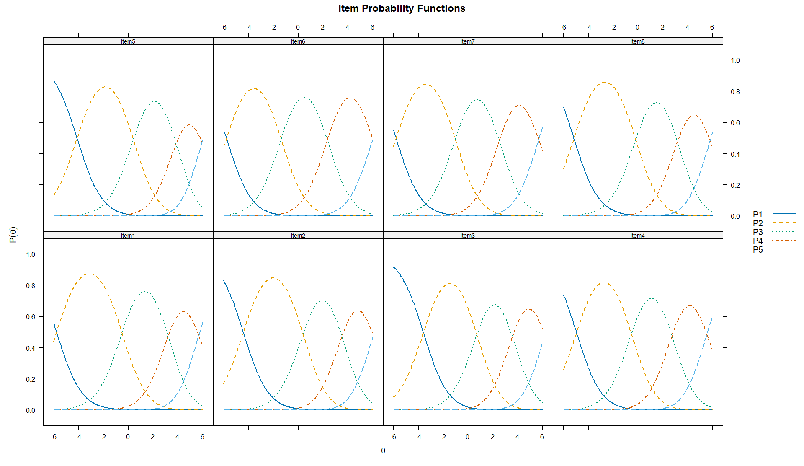
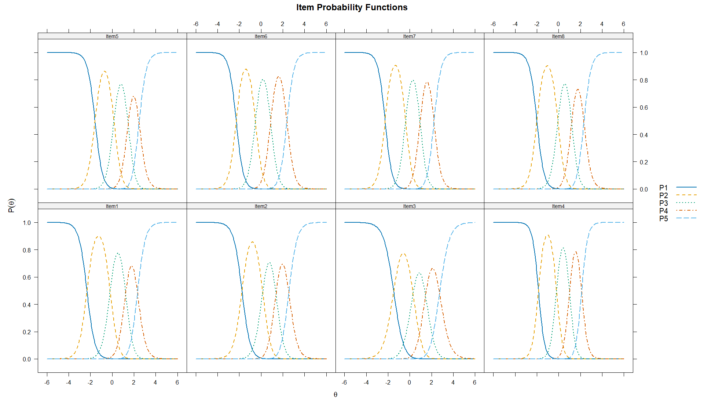
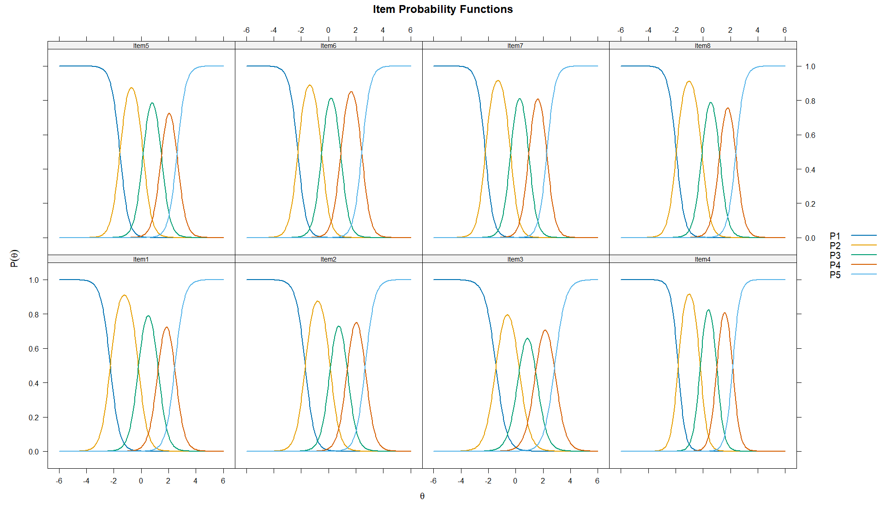
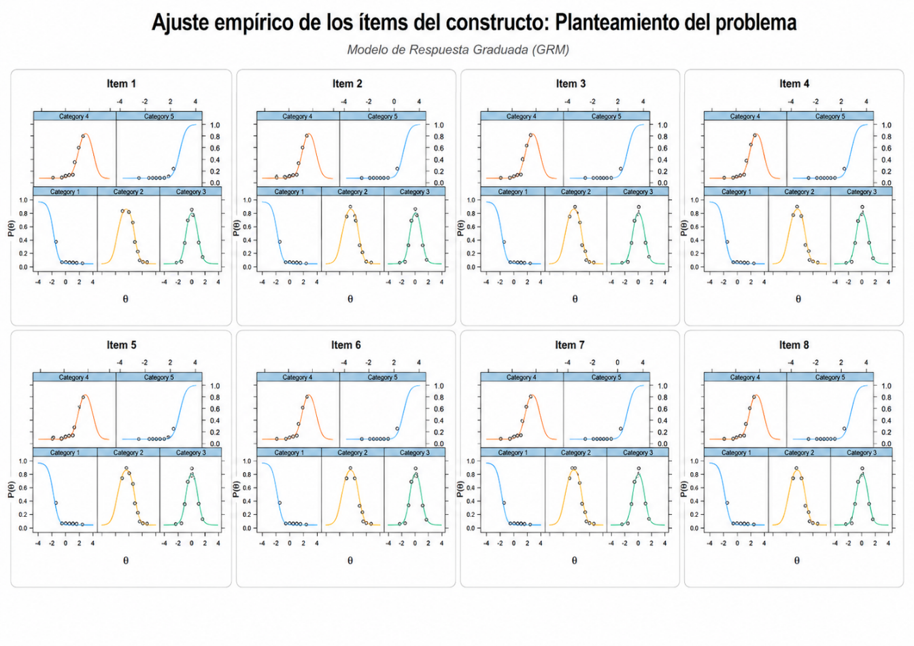
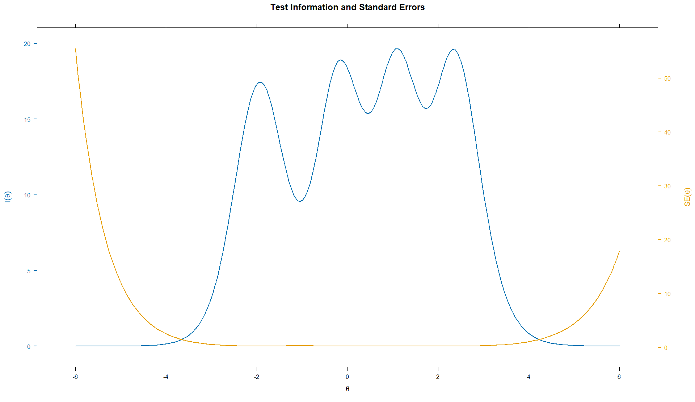
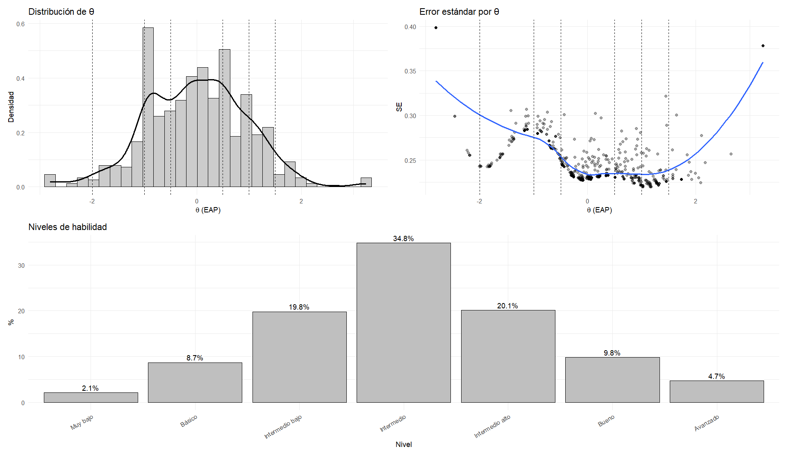
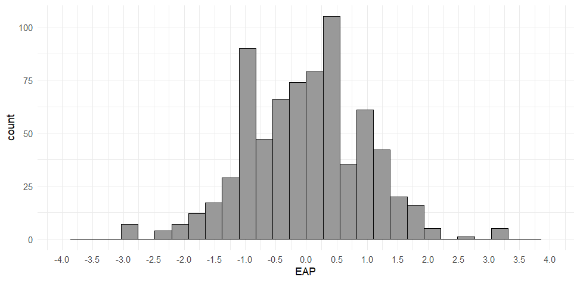
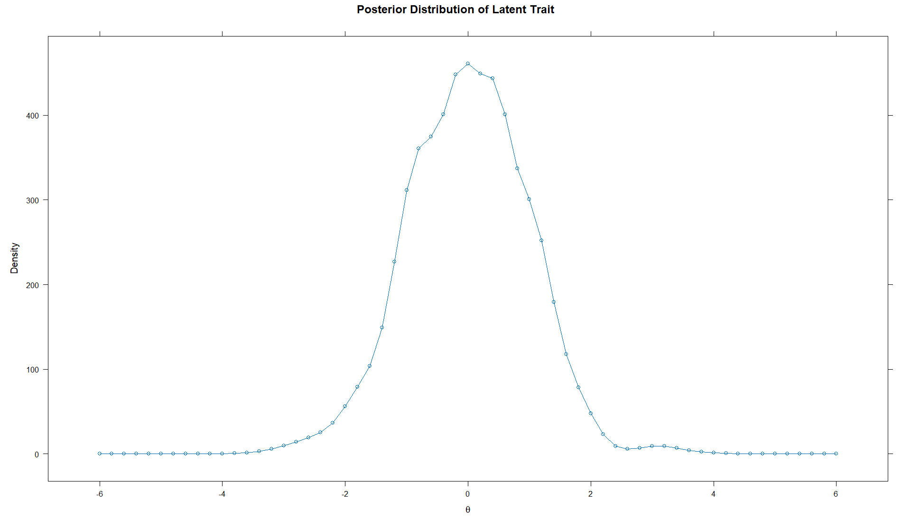
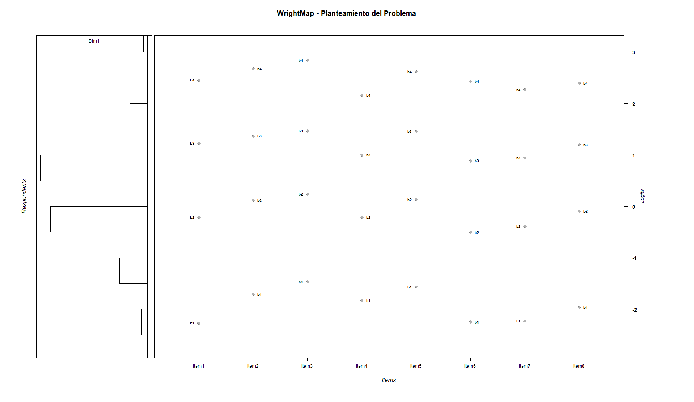

Modelo de Crédito Parcial
Estimación de umbrales del PCM
Para el Modelo de Crédito Parcial/Rasch aplicado al constructo “Planteamiento del problema”, el modelo convergió adecuadamente después de 34 iteraciones, con un cambio máximo muy bajo (Max-Change = 0.00009), lo que indica estabilidad en la estimación. Como se esperaba en este modelo, todos los ítems presentan una discriminación fija de a = 1, por lo que las diferencias entre reactivos se interpretan principalmente a partir de sus umbrales de respuesta. En general, los umbrales muestran una progresión ordenada desde niveles muy bajos del rasgo latente en b1 hasta niveles altos en b4, lo que sugiere que los ítems permiten distinguir distintos grados de dominio en el constructo. Sin embargo, varios umbrales extremos, especialmente los valores superiores cercanos o mayores a 5, indican que las categorías más altas requieren niveles muy elevados de habilidad latente, por lo que podrían estar siendo poco frecuentes o difíciles de alcanzar para la muestra.
Tabla 1.
Umbrales de categoría del PCM del planteamiento del problema
| a | b1 | b2 | b3 | b4 | Item |
|---|---|---|---|---|---|
| 1 | -5.761 | -0.492 | 3.226 | 5.688 | Item1 |
| 1 | -4.412 | 0.400 | 3.534 | 6.060 | Item2 |
| 1 | -3.592 | 0.709 | 3.576 | 6.190 | Item3 |
| 1 | -4.947 | -0.521 | 2.739 | 5.545 | Item4 |
| 1 | -4.108 | 0.419 | 3.863 | 5.946 | Item5 |
| 1 | -5.754 | -1.361 | 2.348 | 6.015 | Item6 |
| 1 | -5.788 | -1.025 | 2.517 | 5.690 | Item7 |
| 1 | -5.159 | -0.178 | 3.188 | 5.803 | Item8 |
Fuente: elaboración propia con RStudio.
Las curvas de probabilidad del PCM muestran un funcionamiento general coherente de las cinco categorías de respuesta, ya que cada opción alcanza su mayor probabilidad en diferentes zonas del rasgo latente. Las categorías bajas predominan en niveles menores de habilidad, mientras que las categorías altas aumentan su probabilidad conforme se incrementa el nivel del constructo. Este patrón sugiere que las respuestas se organizan de manera progresiva y que los ítems permiten distinguir distintos niveles de “Planteamiento del problema”. No obstante, en algunos ítems las categorías superiores requieren niveles altos del rasgo para ser más probables, lo cual coincide con los umbrales elevados observados previamente (Figura 1).
Figura 1.
CCI del “Planteamiento del problema”, modelo PCM

Retrotraducción factorial del PCM
La retrotraducción factorial mostró comunalidades homogéneas y elevadas en todos los ítems (h² = .933), lo que indica que el factor latente explica una alta proporción de la varianza de los reactivos. No obstante, esta igualdad responde a la restricción del modelo PCM/Rasch, donde la discriminación se mantiene fija entre ítems; por ello, conviene contrastar estos resultados con modelos más flexibles como el GPCM o el GRM.
Modelo de Crédito Parcial Generalizado
Estimación de parámetros del GPCM
En el Modelo de Crédito Parcial Generalizado, los ítems presentaron discriminaciones elevadas, con valores a entre 2.16 y 3.61, lo que indica una alta capacidad para diferenciar entre personas con distintos niveles del rasgo latente. El ítem con mayor discriminación fue el Item4 (a = 3.61), mientras que el menor valor correspondió al Item3 (a = 2.16), aunque sigue siendo adecuado. Los umbrales (b1 a b4) muestran una progresión ordenada desde niveles bajos hasta niveles altos del constructo, lo que sugiere un funcionamiento coherente de las categorías de respuesta. En conjunto, el GPCM ofrece una representación más flexible que el PCM, al permitir que cada ítem tenga diferente capacidad discriminativa (Tabla 2).
Tabla 2.
Umbrales de categoría del GPCM del planteamiento del problema
| a | b1 | b2 | b3 | b4 | Item |
|---|---|---|---|---|---|
| 2.717 | -2.328 | -0.183 | 1.245 | 2.321 | Item1 |
| 2.596 | -1.756 | 0.162 | 1.380 | 2.555 | Item2 |
| 2.164 | -1.487 | 0.303 | 1.451 | 2.735 | Item3 |
| 3.610 | -1.854 | -0.191 | 1.011 | 2.115 | Item4 |
| 2.910 | -1.584 | 0.164 | 1.469 | 2.468 | Item5 |
| 3.012 | -2.287 | -0.509 | 0.892 | 2.384 | Item6 |
| 3.116 | -2.277 | -0.382 | 0.949 | 2.226 | Item7 |
| 3.013 | -2.005 | -0.064 | 1.207 | 2.328 | Item8 |
Fuente: elaboración propia con RStudio.
Las curvas del GPCM muestran un funcionamiento ordenado y progresivo de las categorías de respuesta en los ocho ítems del constructo. En general, las categorías bajas presentan mayor probabilidad en niveles reducidos de θ, mientras que las categorías intermedias y altas se vuelven más probables conforme aumenta el rasgo latente. A diferencia del PCM, las curvas del GPCM son más pronunciadas, lo cual es coherente con las discriminaciones elevadas estimadas previamente. Esto indica que los ítems diferencian con mayor precisión entre personas ubicadas en distintos niveles de “Planteamiento del problema”. En conjunto, las curvas sugieren un buen funcionamiento de las categorías y respaldan la utilidad del modelo para representar gradualmente el nivel del constructo (Figura 2).
Figura 2.
CCI del “Planteamiento del problema”, modelo GPCM

Retrotraducción factorial del Modelo GPCM
La retrotraducción factorial del GPCM mostró cargas factoriales muy elevadas en todos los ítems (λ = .957 a .984) y comunalidades altas (h² = .917 a .968). Estos resultados indican que los reactivos se asocian fuertemente con el rasgo latente “Planteamiento del problema” y que una proporción importante de su varianza es explicada por el constructo. A diferencia del PCM, el GPCM permite discriminaciones diferenciadas entre ítems, por lo que estos valores sugieren una representación más precisa del funcionamiento individual de los reactivos dentro del modelo (Tabla 3).
Tabla 3.
Retrotraducción factorial del Modelo GPCM
| Item | F1 | h2 |
|---|---|---|
| Item1 | 0.972 | 0.945 |
| Item2 | 0.970 | 0.941 |
| Item3 | 0.957 | 0.917 |
| Item4 | 0.984 | 0.968 |
| Item5 | 0.976 | 0.952 |
| Item6 | 0.977 | 0.955 |
| Item7 | 0.979 | 0.958 |
| Item8 | 0.977 | 0.955 |
Fuente: elaboración propia con RStudio.
Modelo de Respuesta Graduada
Estimación de parámetros del GRM
En el Modelo de Respuesta Graduada (GRM), los ítems mostraron discriminaciones altas, con valores a entre 2.564 y 3.868, lo que indica una buena capacidad para diferenciar entre personas con distintos niveles del rasgo latente. El ítem con mayor discriminación fue el Item4 (a = 3.868), mientras que el menor valor correspondió al Item3 (a = 2.564), aunque sigue siendo adecuado. Además, los umbrales (b1 a b4) se presentan en orden creciente en todos los reactivos, desde niveles bajos hasta altos de θ, lo que sugiere un funcionamiento coherente de las categorías de respuesta. En conjunto, estos resultados respaldan un buen desempeño del GRM para representar progresivamente el constructo “Planteamiento del problema” (Tabla 4).
Tabla 4.
Umbrales de categoría del GRM del planteamiento del problema
| a | b1 | b2 | b3 | b4 | Item |
|---|---|---|---|---|---|
| 2.984 | -2.267 | -0.210 | 1.228 | 2.457 | Item1 |
| 2.971 | -1.708 | 0.117 | 1.367 | 2.680 | Item2 |
| 2.564 | -1.461 | 0.235 | 1.467 | 2.841 | Item3 |
| 3.868 | -1.826 | -0.211 | 1.002 | 2.164 | Item4 |
| 3.184 | -1.565 | 0.133 | 1.464 | 2.618 | Item5 |
| 3.258 | -2.248 | -0.505 | 0.889 | 2.432 | Item6 |
| 3.388 | -2.230 | -0.387 | 0.946 | 2.271 | Item7 |
| 3.296 | -1.959 | -0.092 | 1.203 | 2.398 | Item8 |
Fuente: elaboración propia con RStudio.
Las CCI del GRM muestran un patrón ordenado y coherente en los ocho ítems del constructo “Planteamiento del problema”. En todos los casos, la categoría más baja predomina en niveles reducidos de θ, mientras que las categorías intermedias se activan progresivamente en niveles medios y las categorías más altas alcanzan su mayor probabilidad en niveles elevados del rasgo latente. Además, las curvas presentan picos relativamente definidos y bien separados, lo que sugiere una adecuada diferenciación entre categorías de respuesta y es consistente con las altas discriminaciones observadas en los ítems. En conjunto, las CCI respaldan un buen funcionamiento del modelo, ya que evidencian una transición gradual y ordenada de las categorías conforme aumenta el nivel del constructo (Figura 3).
Figura 3.
CCI del “Planteamiento del problema”, modelo GRM

Retrotraducción factorial del GRM
La retrotraducción factorial del GRM mostró cargas elevadas en todos los ítems del constructo “Planteamiento del problema”, con valores entre λ = .833 y λ = .915. Las comunalidades también fueron adecuadas, con un rango de h² = .694 a h² = .838, lo que indica que una proporción importante de la varianza de los reactivos es explicada por el factor latente. El Item4 presentó la carga más alta (λ = .915; h² = .838), mientras que el Item3 mostró los valores más bajos (λ = .833; h² = .694), aunque todavía se mantiene en un nivel aceptable. En conjunto, los resultados respaldan una relación sólida de los ítems con el constructo evaluado (Tabla 5).
Tabla 5.
Retrotraducción factorial del Modelo GRM
| Item | F1 | h2 |
|---|---|---|
| Item1 | 0.869 | 0.754 |
| Item2 | 0.868 | 0.753 |
| Item3 | 0.833 | 0.694 |
| Item4 | 0.915 | 0.838 |
| Item5 | 0.882 | 0.778 |
| Item6 | 0.886 | 0.786 |
| Item7 | 0.894 | 0.799 |
| Item8 | 0.889 | 0.790 |
Fuente: elaboración propia con RStudio.
Unidimensionalidad del constructo mediante AFC
La unidimensionalidad se evaluó mediante AFC y mediante índices de ajuste derivados de la TRI. El AFC unidimensional del constructo Planteamiento del problema mostró un ajuste aceptable en términos residuales, con un SRMR = .047, lo que indica baja discrepancia entre la matriz observada y la reproducida por el modelo. Además, los índices incrementales fueron adecuados en su versión escalada (CFI = .980; TLI = .972) y las cargas factoriales estandarizadas fueron altas en todos los ítems (λ = .820 a .896), lo que respalda que los reactivos representan de forma consistente un mismo factor latente. Aunque el RMSEA fue elevado, el SRMR y las cargas factoriales sugieren que la estructura unidimensional es defendible para continuar con el análisis TRI. Los índices de modificación sugirieron distintas asociaciones residuales entre ítems; sin embargo, destacan especialmente las asociaciones entre los ítems 6, 7 y 8, vinculados con el planteamiento de objetivos, preguntas de investigación, supuestos e hipótesis.
En el caso de los índices de ajuste de la TRI. La comparación de ajuste mostró resultados favorables para los modelos flexibles. El GPCM presentó el mejor ajuste residual, con el SRMSR más bajo (.047) y un CFI ligeramente superior (.962), seguido muy de cerca por el GRM (SRMSR = .048; CFI = .961). Aunque el PCM obtuvo mejores valores de RMSEA y TLI, presentó mayor error residual (SRMSR = .081). Al considerar los criterios de información, donde valores menores indican mejor ajuste relativo, el GRM presentó los valores más bajos de AIC, SABIC y BIC, además del mayor logLik. En conjunto, los resultados respaldan al GRM como el modelo con mejor ajuste relativo para el constructo Planteamiento del problema, aunque el GPCM mostró un ajuste residual prácticamente equivalente.
Tabla 6.
Índices de ajuste TRI
| Modelo | M2 | gl | RMSEA | IC 95% RMSEA | SRMSR | TLI | CFI | AIC | SABIC | BIC | LogLik |
|---|---|---|---|---|---|---|---|---|---|---|---|
| PCM | 336.847 | 27 | .126 | [.114, .138] | .081 | .963 | .964 | 10027.343 | 10073.765 | 10178.550 | -4980.671 |
| GPCM | 349.739 | 20 | .151 | [.137, .165] | .047 | .946 | .962 | 9918.269 | 9974.538 | 10101.550 | -4919.134 |
| GRM | 355.431 | 20 | .153 | [.139, .167] | .048 | .945 | .961 | 9860.625 | 9916.894 | 10043.910 | -4890.312 |
Fuente: elaboración propia con RStudio.
Independencia local del modelo GRM
La independencia local del modelo GRM para el constructo Planteamiento del problema se evaluó mediante dos procedimientos complementarios: el estadístico LD de Chen y Thissen (1997) y el índice Q3 de Yen (1984). En el análisis LD, varios pares superaron el punto de referencia de 10.83; sin embargo, debido a la sensibilidad del estadístico al tamaño muestral, la interpretación se centró en la magnitud de las correlaciones residuales estandarizadas. De acuerdo con la documentación de mirt, estas correlaciones se reportan en el triángulo superior de la matriz LD como coeficientes V de Cramer con signo, por lo que su magnitud se interpretó de manera complementaria con criterios de tamaño del efecto. Desde esta perspectiva, el par con mayor asociación residual fue Item2–Item8 (LD = 636.544; r = -.469), lo que sugiere una asociación de magnitud moderada bajo los puntos de referencia de Cohen (1988).
Por su parte, el índice Q3 mostró posibles asociaciones residuales en varios pares, especialmente Item3–Item6 (Q3 = -.365), Item2–Item6 (Q3 = -.358), Item4–Item8 (Q3 = -.314), Item5–Item7 (Q3 = -.309), Item4–Item7 (Q3 = -.296), Item3–Item7 (Q3 = -.255), Item2–Item7 (Q3 = -.240), Item5–Item8 (Q3 = -.236) e Item6–Item7 (Q3 = .243), los cuales superan el punto de referencia de Q3 (> .2236). En conjunto, los resultados sugieren que la independencia local no se cumple plenamente en todos los pares de ítems; sin embargo, la evidencia se concentra en asociaciones específicas, especialmente alrededor del Item2 y de los ítems vinculados con objetivos, preguntas, supuestos e hipótesis. Por tanto, estos hallazgos deben interpretarse como posibles dependencias locales puntuales o redundancia conceptual entre algunos reactivos, más que como un problema generalizado del modelo.
Ajuste al ítem del modelo GRM
El ajuste al ítem del modelo GRM mostró un desempeño general aceptable. Los valores de infit se ubicaron entre .864 y .899, mientras que los valores de outfit oscilaron entre .748 y .908, por lo que la mayoría de los reactivos se mantienen dentro o cerca del rango esperado para un ajuste adecuado. Además, los valores de RMSEA.S_X2 fueron bajos en todos los ítems (.015 a .039), lo que indica discrepancias reducidas entre las respuestas observadas y las esperadas por el modelo. Aunque varios valores de S_X2 y X2* fueron significativos, esto debe interpretarse con cautela debido al tamaño de muestra y al carácter sensible de las pruebas de significancia. En conjunto, no se observan evidencias de desajuste severo al ítem; sin embargo, Item4, Item6 y Item7 podrían revisarse con mayor atención por sus valores Zh superiores a 2 y algunos indicadores significativos.
Tabla 8.
Ajuste al ítem del modelo GRM
| Ítem | Zh | Outfit | Infit | RMSEA.S_X2 | p.S_X2 | X2* | p.X2* | Interpretación |
|---|---|---|---|---|---|---|---|---|
| Item1 | 1.690 | .908 | .895 | .030 | .029 | 39.168 | .031 | Ajuste aceptable |
| Item2 | 1.753 | .877 | .897 | .037 | .003 | 124.852 | .004 | Ajuste aceptable con señal estadística |
| Item3 | 1.688 | .873 | .899 | .031 | .012 | 39.380 | .023 | Ajuste aceptable |
| Item4 | 2.654 | .748 | .864 | .025 | .086 | 32.409 | .029 | Revisión sugerida |
| Item5 | 1.989 | .852 | .897 | .038 | .003 | 39.941 | .022 | Ajuste aceptable con señal estadística |
| Item6 | 2.330 | .872 | .874 | .039 | .002 | 73.481 | .008 | Revisión sugerida |
| Item7 | 2.339 | .866 | .877 | .026 | .081 | 68.091 | .013 | Revisión sugerida |
| Item8 | 2.006 | .815 | .895 | .015 | .284 | 17.076 | .244 | Mejor ajuste relativo |
Fuente: elaboración propia con RStudio.
La evaluación visual del ajuste al ítem muestra, en términos generales, un funcionamiento adecuado de los ocho reactivos del constructo Planteamiento del problema. En la mayoría de los gráficos, los puntos observados se ubican cerca de las curvas teóricas esperadas para cada categoría de respuesta, lo que indica que el modelo GRM reproduce razonablemente el comportamiento empírico de las respuestas. Las categorías 1, 2 y 3 muestran un ajuste visual especialmente claro, con puntos cercanos a las curvas y transiciones ordenadas a lo largo del nivel del rasgo latente θ. Las categorías 4 y 5 presentan menos puntos observados, lo cual sugiere menor frecuencia de respuestas en los niveles altos del constructo; aun así, no se observan desviaciones graves. En conjunto, los gráficos respaldan un ajuste visual aceptable de los ítems, aunque algunos reactivos, como los ítems 2, 3, 4, 6 y 7, presentan pequeñas discrepancias puntuales en categorías intermedias o superiores que conviene interpretar junto con los índices estadísticos de ajuste al ítem.
Figura 4.
Ajuste empírico GRM en ítems del constructo: Planteamiento del problema

Fuente: elaboración propia con RStudio.
Ajuste por persona
El análisis de ajuste por persona identificó los 30 patrones con mayor desviación respecto a lo esperado por el modelo GRM, con valores de Zh entre -7.23 y -3.13. Aunque estos casos muestran infit y outfit elevados, la revisión sustantiva de los patrones de respuesta sugiere que no necesariamente corresponden a respuestas inválidas, sino a perfiles diferenciados de dominio entre los ítems del constructo. En consecuencia, los casos fueron considerados como patrones atípicos desde el punto de vista estadístico, pero no se asumieron como evidencia suficiente para su eliminación automática, dado que pueden reflejar variabilidad real en el desempeño de los estudiantes (Tabla 9).
Tabla 9.
Primeros 10 casos con mayor desajuste en el análisis de ajuste por persona
| Caso | Item1 | Item2 | Item3 | Item4 | Item5 | Item6 | Item7 | Item8 | Outfit | z.outfit | Infit | z.infit | Zh |
|---|---|---|---|---|---|---|---|---|---|---|---|---|---|
| 1 | 5 | 2 | 5 | 2 | 3 | 4 | 5 | 4 | 5.38 | 4.15 | 5.17 | 4.32 | -7.23 |
| 2 | 4 | 4 | 2 | 2 | 1 | 4 | 4 | 4 | 4.64 | 4.01 | 4.26 | 3.77 | -6.70 |
| 3 | 2 | 1 | 1 | 1 | 1 | 4 | 2 | 3 | 6.80 | 3.73 | 5.33 | 4.06 | -6.21 |
| 4 | 2 | 4 | 1 | 2 | 2 | 3 | 4 | 4 | 3.94 | 3.34 | 4.17 | 3.71 | -6.05 |
| 5 | 3 | 1 | 1 | 2 | 3 | 4 | 2 | 3 | 3.28 | 3.24 | 3.19 | 3.22 | -5.71 |
| 6 | 3 | 4 | 2 | 4 | 2 | 5 | 5 | 5 | 4.34 | 3.19 | 4.49 | 3.50 | -5.47 |
| 7 | 2 | 2 | 4 | 4 | 4 | 4 | 2 | 4 | 3.39 | 3.21 | 3.38 | 3.20 | -5.25 |
| 8 | 4 | 4 | 2 | 3 | 2 | 2 | 2 | 4 | 3.76 | 2.98 | 3.63 | 3.08 | -4.93 |
| 9 | 4 | 3 | 2 | 3 | 3 | 5 | 5 | 5 | 3.75 | 3.07 | 3.43 | 3.04 | -4.87 |
| 10 | 3 | 1 | 4 | 4 | 3 | 4 | 4 | 5 | 3.37 | 3.17 | 3.77 | 3.59 | -4.81 |
Fuente: elaboración propia con RStudio.
Curva de información del ítem (IIF)
Las curvas de información del ítem (Figura 5) muestran que el constructo Planteamiento del problema mide con mayor precisión en niveles intermedios y moderadamente altos del rasgo latente, aproximadamente entre θ = -2.5 y θ = 3.0. Esta evidencia es coherente con los parámetros de discriminación del GRM, los cuales fueron altos en todos los reactivos (a1 = 2.564 a 3.868). En particular, el Item4 presentó la mayor discriminación (a1 = 3.868) y los picos más altos de información, por lo que constituye el reactivo con mayor precisión relativa dentro del constructo. También destacaron Item7 (a1 = 3.388), Item8 (a1 = 3.296) e Item6 (a1 = 3.258), que aportan información relevante en diferentes tramos de θ. En contraste, el Item3 mostró la menor discriminación relativa (a1 = 2.564) y una contribución informativa más baja. En conjunto, los resultados sugieren que los ítems ofrecen buena precisión de medición, aunque el constructo pierde información en los extremos del continuo latente (Tabla 10).
Tabla 10.
Parámetros de discriminación del GRM y aporte informativo esperado
| Ítem | Discriminación a1 | Nivel relativo de discriminación | Lectura para la información del ítem |
|---|---|---|---|
| Item4 | 3.868 | Muy alta | Ítem con mayor precisión esperada; coincide con los picos más altos de información |
| Item7 | 3.388 | Muy alta | Aporta alta información en varios tramos del rasgo |
| Item8 | 3.296 | Muy alta | Contribuye de forma importante a la precisión del constructo |
| Item6 | 3.258 | Muy alta | Presenta alta capacidad informativa, especialmente en niveles medios-altos |
| Item5 | 3.184 | Muy alta | Aporta información relevante en el rango central del rasgo |
| Item1 | 2.984 | Alta | Contribución informativa adecuada |
| Item2 | 2.971 | Alta | Buena precisión, aunque menor que los ítems más discriminantes |
| Item3 | 2.564 | Alta | Menor discriminación relativa, por lo que aporta menos información comparativa |
Fuente: elaboración propia con RStudio.
Figura 5.
Curvas de información de los ítems del constructo Planteamiento del problema
Fuente: elaboración propia con RStudio.
Curva de información del test (TIF) y Curva de error estándar (SEC)
La Curva de Información del Test (TIF) muestra que el constructo Planteamiento del problema alcanza su mayor precisión de medición en un rango amplio del rasgo latente, aproximadamente entre θ = -2.5 y θ = 3.0. En esta zona, la información del test se mantiene elevada, con picos cercanos a I(θ) = 20, lo que indica que el conjunto de ítems permite estimar con mayor precisión el nivel del constructo en estudiantes ubicados en niveles bajos-moderados, medios y moderadamente altos. De forma complementaria, la curva de error estándar presenta el patrón inverso: el error disminuye justamente donde la información es mayor, especialmente en el rango central de θ. En cambio, en los extremos del continuo, particularmente por debajo de θ = -4 y por encima de θ = 4, la información cae y el error estándar aumenta, lo que sugiere menor precisión para estimar niveles muy bajos o muy altos del constructo. En conjunto, el modelo muestra una buena capacidad informativa general, especialmente en el rango donde probablemente se concentra la mayor parte de los participantes (Figura 6).
Figura 6.
Curva de información del test y error estándar

Fuente: elaboración propia con RStudio.
Estimación de habilidades
Estimación referencial de habilidades latentes
Una vez calibrado el modelo GRM del constructo Planteamiento del problema, se estimaron de manera referencial las habilidades latentes de los participantes mediante el método EAP. Para fines descriptivos, estas habilidades se clasificaron mediante un baremo teórico de la escala θ: muy bajo (θ < -2), básico (-2 ≤ θ < -1), intermedio bajo (-1 ≤ θ < -0.5), intermedio (-0.5 ≤ θ ≤ 0.5), intermedio alto (0.5 < θ ≤ 1), bueno (1 < θ ≤ 1.5) y avanzado (θ > 1.5). Esta clasificación debe interpretarse como una aproximación descriptiva del modelo calibrado, no como una clasificación diagnóstica definitiva, ya que las estimaciónes corresponden a la misma muestra utilizada para la calibración del modelo.
A partir del modelo GRM calibrado, las habilidades latentes estimadas mediante EAP se distribuyeron alrededor del centro de la escala θ, con una dispersión cercana a una unidad estándar y un error estándar promedio bajo. En términos descriptivos, la mayor proporción de participantes se ubicó en el nivel intermedio (34.8%), seguida de los niveles intermedio alto (20.1%) e intermedio bajo (19.8%). Una menor proporción se concentró en los niveles básico (8.7%), bueno (9.8%), avanzado (4.7%) y muy bajo (2.1%). En conjunto, los resultados sugieren que el modelo organiza principalmente a los participantes en niveles intermedios del constructo, con menor presencia de perfiles extremos.
Tabla 11.
Estimación de habilidades latentes mediante EAP en el modelo GRM
| n | Media θ | DE θ | Mínimo θ | Máximo θ | Media SE | Muy bajo | Básico | Intermedio bajo | Intermedio | Intermedio alto | Bueno | Avanzado |
|---|---|---|---|---|---|---|---|---|---|---|---|---|
| 722 | 0.000 | 0.969 | -2.81 | 3.24 | 0.250 | 15 (2.1%) | 63 (8.7%) | 143 (19.8%) | 251 (34.8%) | 145 (20.1%) | 71 (9.8%) | 34 (4.7%) |
Fuente: elaboración propia con RStudio.
Figura 7.
Gráfico integrador de niveles de habilidad ante el planteamiento del problema

Fuente: elaboración propia con RStudio.
El siguiente histograma EAP (Figura 8) permite mostrar visualmente que la mayoría de los participantes se concentran en la zona media del rasgo.
Figura 8.
Histograma EAP Planteamiento del problema Modelo 1 GRM.

Fuente: elaboración propia con RStudio.
Distribución posterior del rasgo latente
La distribución posterior del rasgo latente muestra una forma aproximadamente unimodal, centrada alrededor de θ = 0 y cercana a una distribución normal, lo que sugiere que la localización de los participantes en el continuo latente del constructo Planteamiento del problema es coherente con la métrica asumida por el modelo TRI. La mayor densidad se concentra en niveles medios del rasgo, mientras que los extremos presentan menor presencia de casos. Aunque se observa una ligera asimetría o pequeñas irregularidades en la cola derecha, no parece haber una desviación severa respecto a la forma normal esperada. Por tanto, el gráfico respalda de manera visual que la distribución del rasgo latente estimado es razonablemente compatible con la normalidad asumida en el modelo, aunque no debe interpretarse como una prueba formal de normalidad.
Figura 9.
Distribución posterior del rasgo latente

Fuente: elaboración propia con RStudio.
Evaluación del ajuste persona-ítem mediante Wright Map
El Wright Map (Figura 10) muestra que los umbrales de los ítems se distribuyen en un rango amplio del continuo latente, aproximadamente desde niveles bajos hasta niveles altos de θ, lo que indica que el constructo cuenta con reactivos capaces de cubrir distintos grados de habilidad en Planteamiento del problema. La mayor concentración de participantes se ubica en niveles medios del rasgo, zona que se encuentra razonablemente cubierta por los umbrales intermedios b2 y b3. Asimismo, los umbrales superiores b4 se localizan en niveles altos de θ, lo que permite identificar a participantes con mayor dominio del constructo. No obstante, los extremos del continuo presentan menor cobertura, especialmente en niveles muy bajos y muy altos, lo cual es esperable en instrumentos centrados en la zona media de habilidad. En conjunto, el mapa sugiere que el test está razonablemente bien dirigido a la muestra, aunque su mayor precisión se concentra en niveles bajos-medios, medios y moderadamente altos del rasgo.
Figura 10.
Wright Map del ajuste persona-ítem

Fuente: elaboración propia con RStudio.
Fiabilidad
La fiabilidad marginal del modelo GRM fue elevada (rxx = .938), lo que indica que el constructo Planteamiento del problema presenta una alta precisión general para estimar las habilidades latentes de los participantes. La curva de fiabilidad (Figura 11) muestra que esta precisión se mantiene especialmente alta en un rango amplio del continuo, aproximadamente entre θ = -2.5 y θ = 3.0, donde la fiabilidad se acerca a valores superiores a .90. En cambio, la precisión disminuye en los extremos del rasgo, particularmente en niveles muy bajos y muy altos de θ, lo cual es esperable porque hay menor información disponible en esas zonas. En conjunto, los resultados sugieren que el modelo ofrece estimaciónes confiables para la mayoría de los participantes, especialmente en los niveles donde se concentra la muestra.
Figura 11.
Curva de fiabilidad marginal del modelo GRM
Fuente: elaboración propia con RStudio.